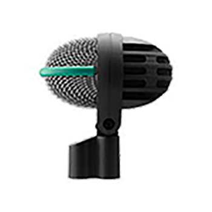
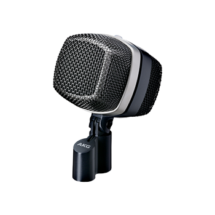
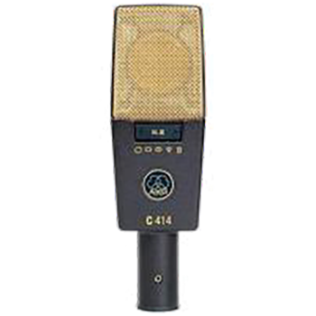
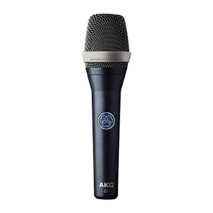

Dynamic
D112 MKII
Professional dynamic bass drum microphone
The D112 MKII is a professional dynamic bass drum microphone known for high SPL handling, punchy EQ response, and durable construction for demanding live sound applications.
Our Gear
Browse available AKG microphone rental inventory from VD Audio Rental for touring, theatre, live production, and professional audio applications.
Filter available AKG microphones by type below and contact us for availability, production support, and quote requests.
Request a QuoteSelect a category to view available AKG options.

Dynamic
Professional dynamic bass drum microphone
The D112 MKII is a professional dynamic bass drum microphone known for high SPL handling, punchy EQ response, and durable construction for demanding live sound applications.

Dynamic
Reference large-diaphragm dynamic microphone
The D12 VR is a reference large-diaphragm dynamic microphone with cardioid polar pattern, designed specifically for kick-drum recording applications and enhanced low-frequency performance.

Condenser
Reference multipattern condenser microphone
The C414 XLS offers nine polar patterns for a wide range of recording and live sound applications, with flexible control and reliable performance in professional environments.

Condenser
Professional large-diaphragm condenser microphone
The C214 large-diaphragm condenser microphone has been designed as a cost-effective alternative to the high-end C414 family.

Condenser
Reference small-diaphragm condenser microphone
The C451 B is a small-diaphragm condenser microphone designed for accurate capture and detailed response across a wide variety of professional audio uses.

Condenser
Reference condenser vocal microphone
The AKG C7 reference handheld condenser microphone delivers premium studio-quality condenser sound and hassle-free operation on any stage.

Pickup
High-performance miniature condenser vibration pickup
The C411 PP is a lightweight vibration pickup for acoustic and string instruments, designed to capture clear sound while attaching without significantly affecting balance.